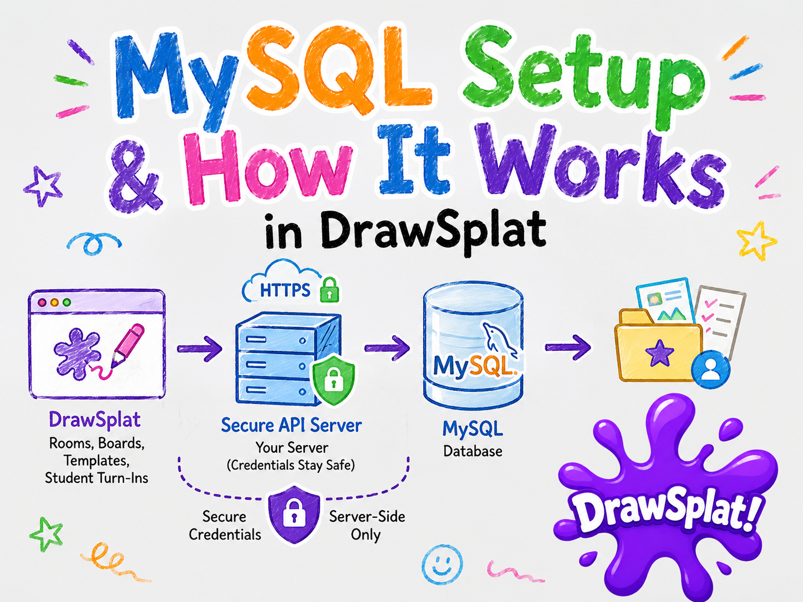

Setup Guide
DrawSplat MySQL Setup and How It Works
The MySQL backend is for self-hosted DrawSplat deployments that want local database storage for rooms, boards, templates, student turn-ins, retention metadata, and audit-ready server records.
How the MySQL Option Works
The DrawSplat browser app never connects directly to MySQL. The browser talks to a backend API over HTTP or HTTPS, and the backend talks to the database.
DrawSplat browser app -> HTTPS backend API -> MySQLThis matters because database hostnames, usernames, and passwords must stay on the server. Students and teachers should only receive the public backend API endpoint.
What the Starter Backend Provides
The starter backend in server/mysql-backend/ includes API routes for:
- health checks
- room creation
- board load and save
- reusable templates
- student turn-ins
- temporary session deletes
- expired-session maintenance
The starter stores board JSON in MySQL. For large image or audio uploads, a production deployment should add object storage or a protected filesystem location and store only metadata or file pointers in MySQL.
1. Create the Database
Create a MySQL database and application user on the database server:
CREATE DATABASE drawsplat CHARACTER SET utf8mb4 COLLATE utf8mb4_unicode_ci;
CREATE USER 'drawsplat_app'@'%' IDENTIFIED BY 'CHANGE_ME';
GRANT SELECT, INSERT, UPDATE, DELETE ON drawsplat.* TO 'drawsplat_app'@'%';
FLUSH PRIVILEGES;Use a strong password and restrict the database host permissions for your deployment.
2. Run the Schema
From the backend folder, load the schema into the database:
mysql -u drawsplat_app -p drawsplat < schema.sqlThe schema prepares the tables needed for rooms, boards, templates, turn-ins, retention metadata, and audit records.
3. Install and Configure the Backend
Install the Node backend dependencies in server/mysql-backend/:
npm installCreate the server-only environment file:
cp .env.example .envEdit .env with the real database host, port, database name, user, password, TLS setting, and allowed DrawSplat origin. Keep this file out of Git and do not share it with students.
4. Start and Test the Backend
Start the backend server:
npm startThen test the health route:
curl http://localhost:8787/api/drawsplat/mysql/healthA healthy backend returns JSON similar to:
{"ok":true,"provider":"mysql","time":"2026-05-16T00:00:00.000Z"}5. Connect DrawSplat to the Backend
- Open DrawSplat MySQL Setup Wizard.
- Enter the public backend API endpoint, such as
https://drawsplat.example.org/api/drawsplat/mysql. - Use Test Endpoint to verify the backend responds.
- Use Save Endpoint to store the endpoint in the current browser.
The wizard saves the endpoint and can generate a server-side .env template. It does not save the MySQL password in the browser.
Current Integration Status
The MySQL backend and setup wizard are the foundation for a self-hosted storage provider. The current static app can save the MySQL endpoint setting without breaking Google Apps Script. Full board sync through the MySQL API requires wiring the board save, load, cloud-sync, template, and turn-in calls to the MySQL provider.
Production Checklist
- Serve the backend over HTTPS.
- Keep
.envout of Git. - Do not expose MySQL directly to browsers.
- Add authentication before public use.
- Add role checks for teacher, student, and admin actions.
- Set request-size limits appropriate for your deployment.
- Put media files in object storage or a protected filesystem path.
- Run expired-session cleanup as a scheduled job.
- Log administrative deletes and exports in audit records.